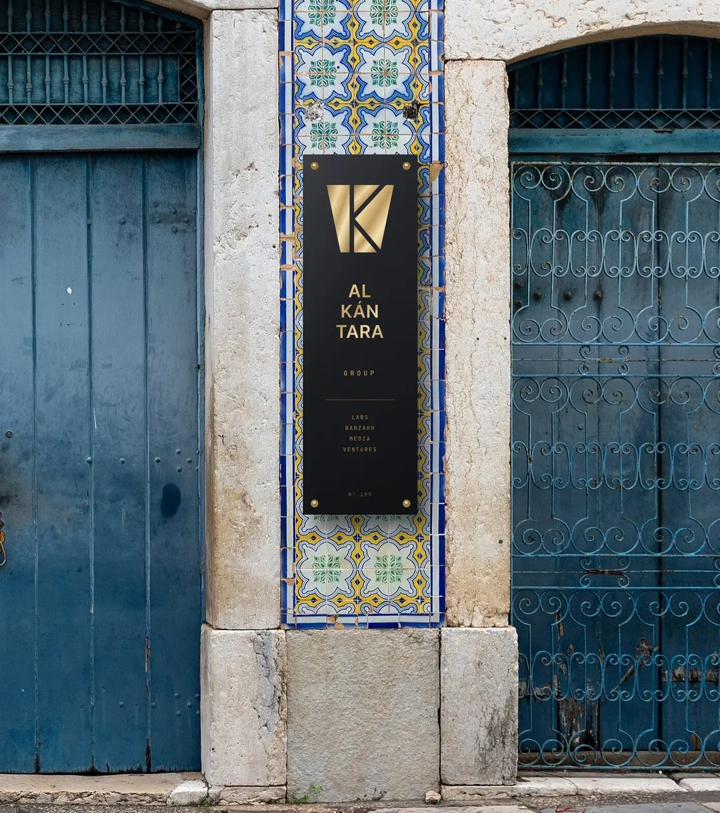
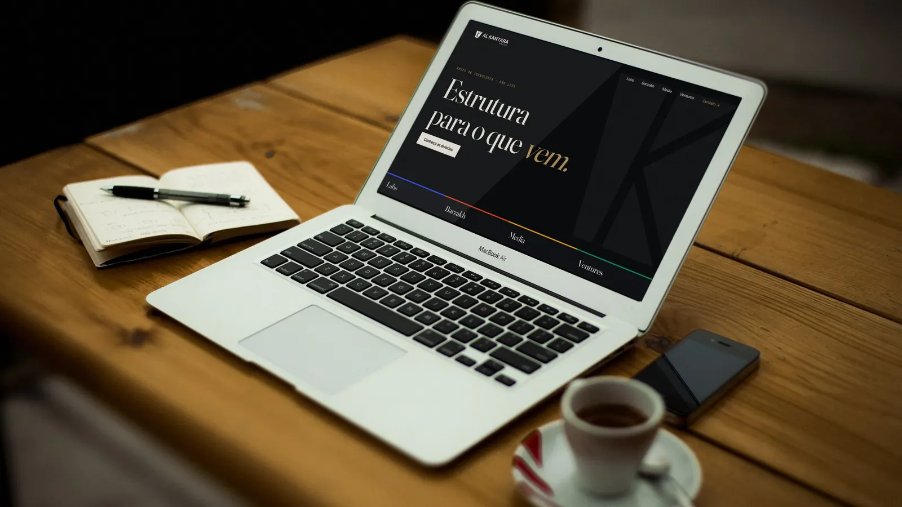
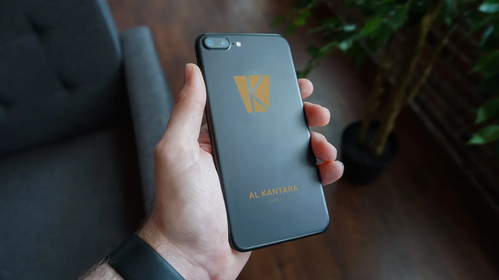
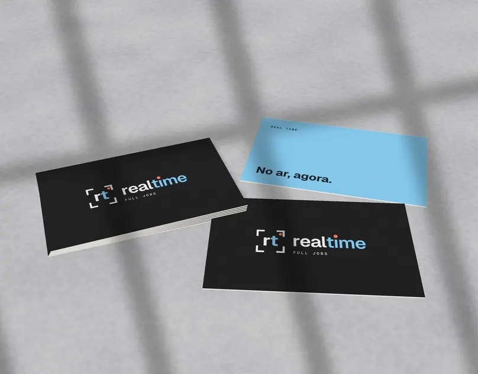

Barzakh · um estúdio Al Kántara
Barzakh · um estúdio Al KántaraBarzakh
Identidade do próprio estúdio: arco, monólito e ouro em hot stamping. Do símbolo à placa de fachada.
Ver projeto → Conversar
Conversar
GRUPO DE TECNOLOGIA · SÃO LUÍS, MARANHÃO
Construímos a tecnologia, a marca e a audiência de negócios que querem ir longe, a partir do Maranhão.
MANIFESTO
Uma ponte não é decoração. É cálculo, peso e paciência. No topo de todo arco existe uma pedra que segura as outras. Ela não aparece mais que as outras. Ela só não falha. Somos essa pedra.



01 · ARQUITETURA
Cada divisão se sustenta sozinha e sustenta o grupo. Juntas, constroem, dão forma, levam longe e provam na prática.
02 · TRABALHO
Barzakh · um estúdio Al KántaraIdentidade do próprio estúdio: arco, monólito e ouro em hot stamping. Do símbolo à placa de fachada.
Ver projeto → Al Kántara Labs
Al Kántara LabsApp de clonagem de voz e vídeo com o material do próprio dono. Marca, interface e aplicações.
Projeto entregue
Barzakh · um estúdio Al KántaraIdentidade de uma operação que trabalha no ar, agora. Sistema de cor, cartões e peças.
Projeto entregue Barzakh · um estúdio Al Kántara
Barzakh · um estúdio Al KántaraMarca de loja de celulares: procedência que dá para ver, do cartão à tela.
Projeto entregue Barzakh · um estúdio Al Kántara
Barzakh · um estúdio Al KántaraCurso sobre o dia a dia da câmara, com identidade institucional em verde e dourado.
Projeto entregue Al Kántara Ventures
Al Kántara VenturesOperação de pizzaria do grupo: marca, embalagem, site e pedidos em sistema próprio.
Projeto entregue03 · COMO TRABALHAMOS
Medimos antes de prometer. Entregamos o que foi combinado, do jeito que foi combinado.
Português simples. Proposta com escopo, prazo e responsável por escrito.
Cada divisão se sustenta sozinha. Nenhuma pedra é enfeite.
Código, marca e dados ficam no seu nome. Construímos para durar.
PRÓXIMO PASSO
Uma conversa de 30 minutos para entender o seu caso e dizer, com franqueza, se e como podemos ajudar.